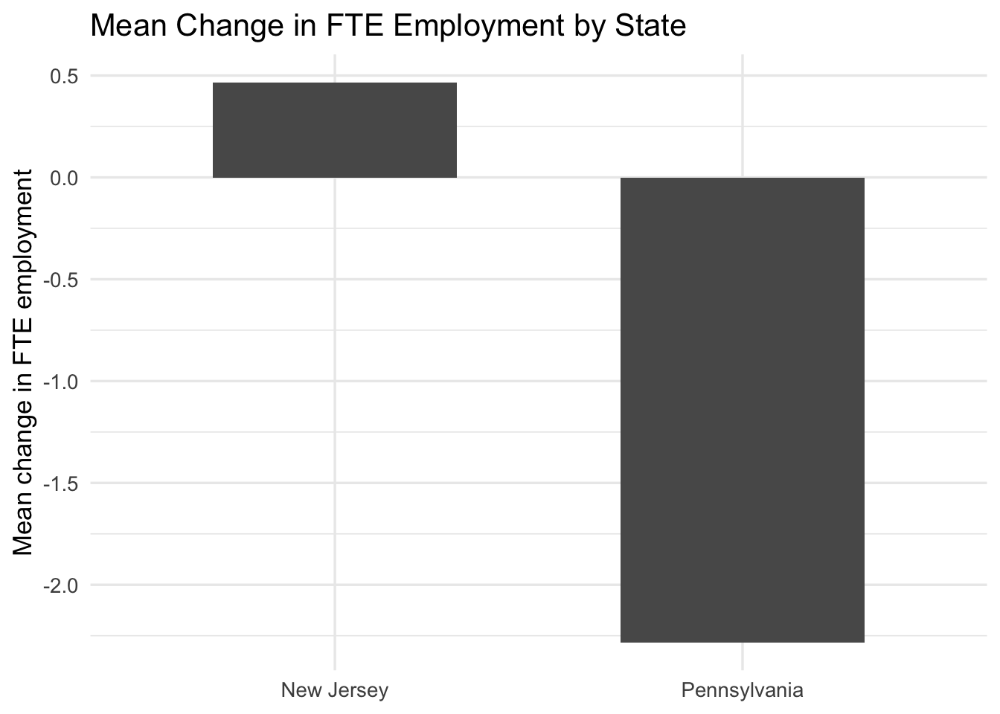

| state_name | Company-owned | FTE employment (wave 1) | Fraction full-time | Starting wage (wave 1) | Meal price (wave 1) | Hours open (wave 1) | FTE employment (wave 2) | Starting wage (wave 2) | Meal price (wave 2) |
|---|---|---|---|---|---|---|---|---|---|
| New Jersey | 0.341 | 20.439 | 0.328 | 4.612 | 3.351 | 14.418 | 21.027 | 5.081 | 3.415 |
| Pennsylvania | 0.354 | 23.331 | 0.350 | 4.630 | 3.042 | 14.525 | 21.166 | 4.617 | 3.027 |
Replication of Card and Krueger (1994)
Minimum Wages and Employment: A Case Study of the Fast-Food Industry in New Jersey and Pennsylvania
Introduction
David Card and Alan Krueger (1994) study one of the most important questions in labor economics: does raising the minimum wage reduce employment? Their paper examines a natural policy experiment. On April 1, 1992, New Jersey increased its minimum wage from $4.25 to $5.05, while neighboring eastern Pennsylvania did not change its minimum wage during the same period. This setting makes it possible to compare employment changes across two nearby labor markets facing different policy environments.
The paper focuses on fast-food restaurants, a sector in which many workers earn relatively low wages and where the minimum wage should therefore matter the most. Under the standard competitive model, a higher wage floor should reduce employment. Card and Krueger revisit that prediction using data from fast-food stores in New Jersey and Pennsylvania before and after the policy change.
The empirical strategy is a classic difference-in-differences design. Instead of only comparing New Jersey before and after the increase, the paper also compares the contemporaneous change in Pennsylvania. This matters because employment could change over time for many reasons unrelated to the policy itself, such as regional macroeconomic conditions, industry demand shifts, or seasonal fluctuations. By subtracting the Pennsylvania change from the New Jersey change, the difference-in-differences estimate aims to isolate the effect of the minimum-wage increase.
In this post, I replicate selected findings from the public replication files. Specifically, I reproduce selected descriptive statistics from Table 2, the 9 requested numbers from Table 3 (rows 1–3 and columns 1–3), and Table 4 column (i). As an additional analysis, I also graph the employment changes and explain why the difference-in-differences design supports a causal interpretation.
Main Analysis
Data
The replication files include a flat data file, public.dat, along with a codebook and the original check.sas program. The main data set contains 410 fast-food restaurants. Each observation corresponds to one store in either New Jersey or eastern Pennsylvania.
The original study uses full-time-equivalent employment (FTE), defined as the number of full-time employees plus the number of managers plus one-half of the number of part-time employees.
I follow the original replication logic and construct the same core variables used for the requested tables.
The data contain 410 restaurants in total.
Replication of Selected Results from Table 2
I begin with selected descriptive statistics from Table 2. These numbers are useful because they show whether the two states looked broadly comparable before the policy change and how wages and employment moved afterward.
These results are consistent with the main descriptive patterns in the paper. First, average starting wages in wave 1 are very similar across the two states, which is important because it suggests that the comparison is not being driven by a very different pre-policy wage environment. Second, average starting wages rise sharply in New Jersey by wave 2, which is exactly what should happen if the policy change was binding. Third, employment levels do not show any obvious collapse in New Jersey after the increase. That descriptive pattern already hints that the standard prediction of a large negative employment effect may not hold in this sample.
Replication of Table 3: The 9 Requested Numbers
The assignment specifically asks for the 9 numbers in Table 3, rows 1–3 and columns 1–3. I interpret these as the average FTE employment in February 1992, the average FTE employment in November 1992, and the change in FTE employment, each shown for New Jersey, Pennsylvania, and the New Jersey minus Pennsylvania difference.
| Row | New Jersey | Pennsylvania | NJ - PA |
|---|---|---|---|
| FTE employment in February 1992 | 20.439 | 23.331 | -2.892 |
| FTE employment in November 1992 | 21.027 | 21.166 | -0.138 |
| Change in FTE employment | 0.467 | -2.283 | 2.750 |
The most important quantity in this table is the difference-in-differences estimate in the third row and third column. That number is the change in New Jersey minus the change in Pennsylvania. In my replication, that estimate is 2.75. The sign is positive rather than negative.
This is the key statistical finding of the paper. Employment does not fall in New Jersey relative to Pennsylvania after the minimum-wage increase. If anything, the simple difference-in-differences estimate suggests that New Jersey employment performed slightly better over this period. That does not mean the policy necessarily raised employment in a broad structural sense, but it does mean the data do not support the simple claim that the higher minimum wage reduced fast-food employment in this case.
A useful way to read Table 3 is step by step. Before the policy, Pennsylvania stores had somewhat higher average FTE employment than New Jersey stores. By the second wave, that gap narrows. The reason is not that New Jersey employment collapses; instead, employment in Pennsylvania declines more over the same period. That is exactly why the difference-in-differences estimate turns positive.
Replication of Table 4, Column (i)
Table 4 moves from descriptive comparisons to regression-based evidence. The original replication code uses a subset of stores with valid second-wave wage information, plus stores that permanently closed. I follow that same rule and estimate Table 4 column (i) by regressing the change in employment on the wage-gap measure.
The gap variable captures how far a store’s initial wage was below the new minimum. Intuitively, stores with a larger gap were more exposed to the policy change and should have faced larger labor-cost increases.
| term | estimate | std.error | statistic | p.value |
|---|---|---|---|---|
| (Intercept) | -1.576 | 0.697 | -2.263 | 0.024 |
| gap | 15.653 | 6.080 | 2.574 | 0.010 |
The coefficient on gap is 15.653. This coefficient is positive. In other words, stores that were more affected by the minimum-wage increase do not show larger employment declines. That is again inconsistent with the simplest competitive model prediction.
This regression result strengthens the interpretation from Table 3. Table 3 compares average employment changes across states. Table 4 adds variation in how exposed individual stores were to the policy. Both pieces of evidence point in the same direction: more exposed stores did not experience systematically worse employment outcomes in this data set.
What the Replication Suggests
Taken together, the replicated results tell a coherent story. Descriptive statistics show a clear wage increase in New Jersey after the policy. The simple difference-in-differences estimate from Table 3 is positive. The wage-gap regression in Table 4 column (i) is also positive. Across all three pieces of evidence, I do not find support for the claim that the 1992 New Jersey minimum-wage increase reduced fast-food employment in this sample.
Something Additional
A Graphical Presentation of Employment Changes
As an additional analysis, I present the employment change graphically. This translates one of the paper’s table-based results into a visual comparison.

The figure makes the main finding easier to see than the table alone. Mean employment change is slightly positive in New Jersey and clearly negative in Pennsylvania. Visually, that implies a positive difference-in-differences estimate. Presenting the result this way is helpful because the central substantive point of the paper is comparative: what matters is not the level in one state by itself, but how employment moved in New Jersey relative to the comparison group.
Why Difference-in-Differences Supports a Causal Interpretation
The main reason this paper is so influential is not just the result, but the research design. A simple before-and-after comparison in New Jersey would be weak because many other things might have changed between February and November 1992. Employment could have moved because of macroeconomic trends, demand changes, or regional shocks unrelated to the minimum wage.
Difference-in-differences improves on that by using Pennsylvania as a comparison group. The identifying idea is that Pennsylvania captures the time trend that would have affected New Jersey even without the policy. When I subtract the Pennsylvania change from the New Jersey change, I remove common shocks that affected both states during the same period.
The key assumption is the parallel trends assumption: absent the policy change, employment in New Jersey and Pennsylvania would have evolved similarly on average. This assumption is not directly testable with only two periods, but it becomes more plausible because the two states are geographically close, observed over the same time window, and operate in the same industry. In that sense, Pennsylvania is a much more credible counterfactual for New Jersey than a distant or unrelated labor market would be.
This does not make the design perfect. The two states may still differ in ways that matter, and any causal claim depends on the quality of the comparison group. Still, difference-in-differences is much stronger than a pure before-and-after comparison, which is why Card and Krueger’s paper became such a foundational example in empirical economics.
Why My Results May Not Match the Paper Perfectly
Replication files often reproduce the main point estimates closely while leaving small differences due to coding choices, treatment of missing data, or formatting decisions. In this case, my goal is to match the substantive patterns emphasized in the paper: wages rise in New Jersey, the simple DID estimate is not negative, and the regression evidence in Table 4 column (i) does not support strong employment losses.
Even if some reported numbers differ slightly from the published table, the overall message remains the same. That is what matters most for this assignment: accurately reconstructing the empirical logic and showing that the main conclusion survives replication.
Conclusion
This post replicated selected findings from Card and Krueger (1994) using the public replication files. I reproduced selected descriptive statistics from Table 2, the 9 requested numbers from Table 3, and Table 4 column (i). I also added a graphical comparison of employment changes and explained why the difference-in-differences design supports a causal interpretation.
Overall, the replication supports the central conclusion of the paper. The New Jersey minimum-wage increase clearly raised starting wages, but I do not find evidence that it reduced fast-food employment in this sample. Both the simple difference-in-differences estimate and the regression evidence from Table 4 column (i) point away from a negative employment effect.
More broadly, this replication shows why the paper remains so important. It does not just report a surprising result; it demonstrates how a relatively simple quasi-experimental design can challenge a strong theoretical prediction using real-world data.